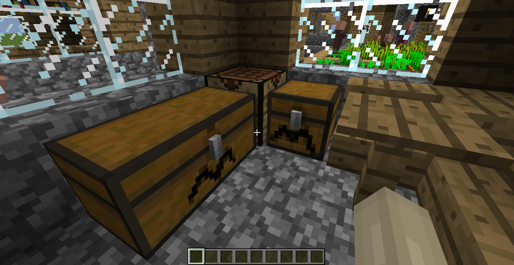
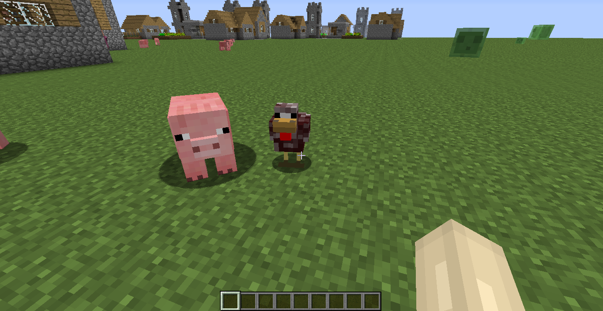
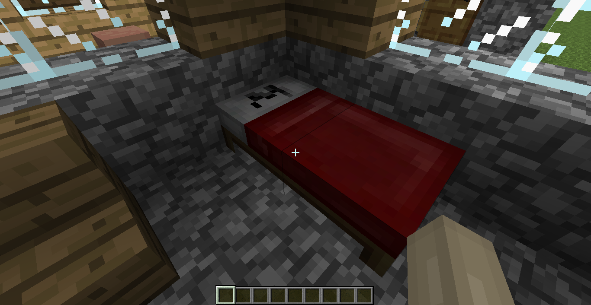
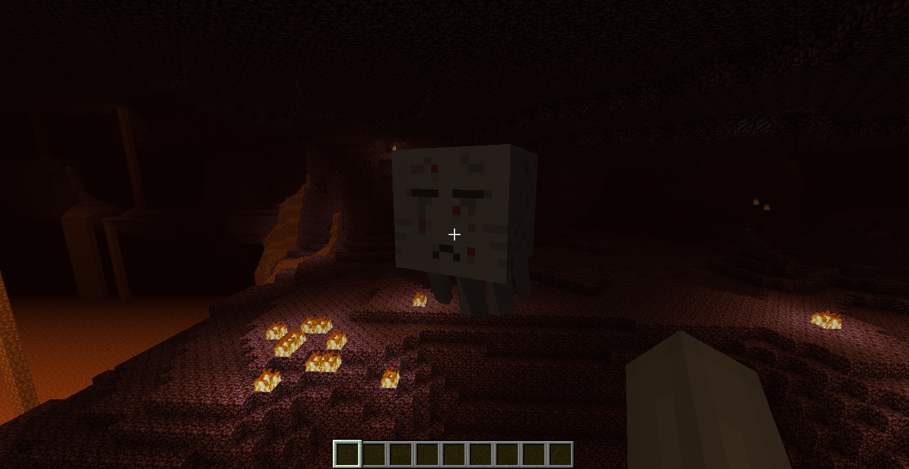

Craftykids Texture Pack
The default Minecraft textures with small changes by craftykids.
(My first texture pack which I made ages ago and am really only hosting now in order to add context to a description of my second pack.)
Download here.

Chests have M's on them.

Chickens are brown. Ignore the pig.

Beds also have M's (which stand for "Minecraft," in case you couldn't tell).

Ghasts are sad because they have chickenpox.